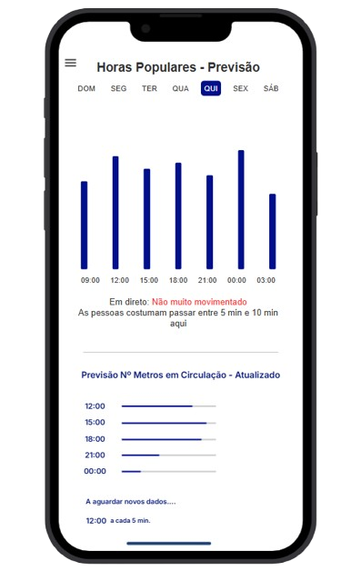
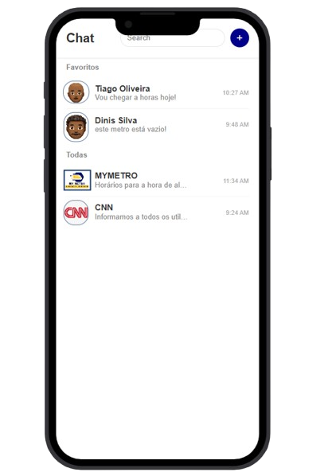
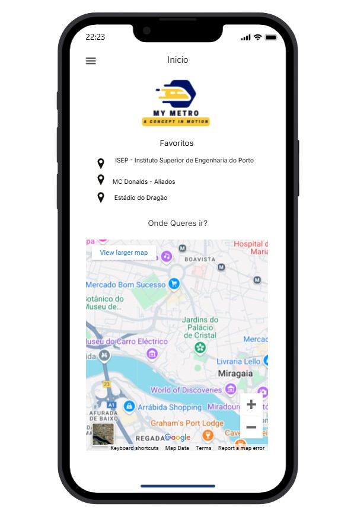
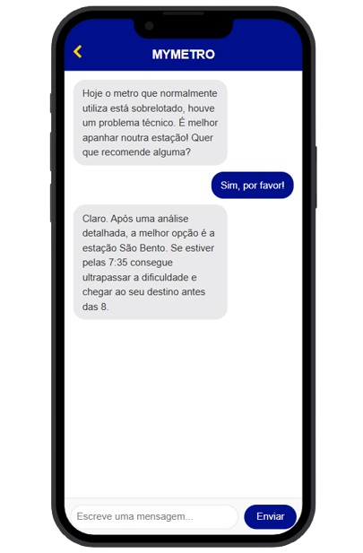

Página Informativa
Vê o tempo de espera em tempo real nas estações do Metro, a frequência de passagem, entre outras informações úteis.

Página de Chat
Fala com os outros utilizadores do Metro. Aqui podes aceder às tuas conversas e interagir com a comunidade.

Página de Favoritos
Adiciona as tuas localizações preferenciais e guarda-as aqui. Sempre que quiseres ir para um dos locais selecionados basta vires aqui!

Página de Ferramenta IA
Utiliza a nossa ferramenta de IA para o que precisares. Desde rotas alternativas, melhores horários, etc. Ela está aqui para te ajudar!